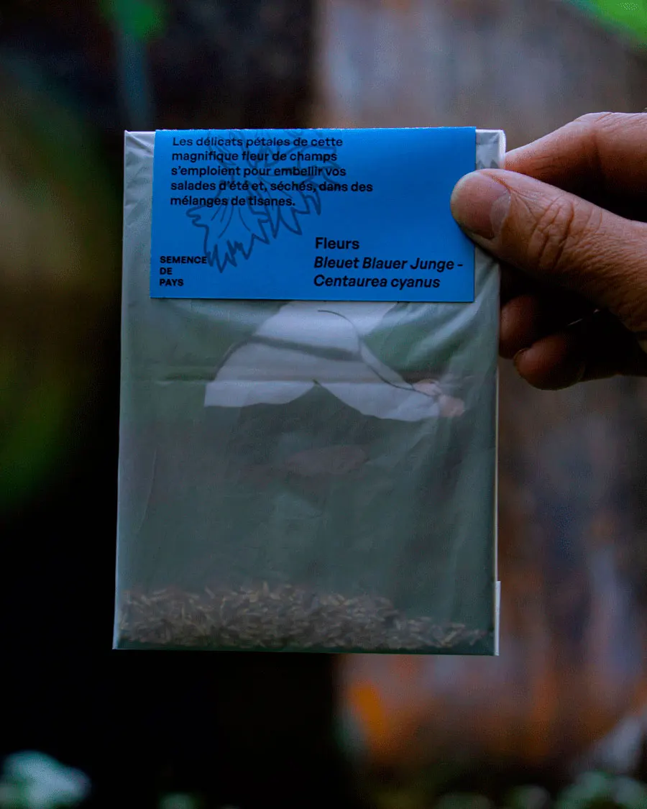
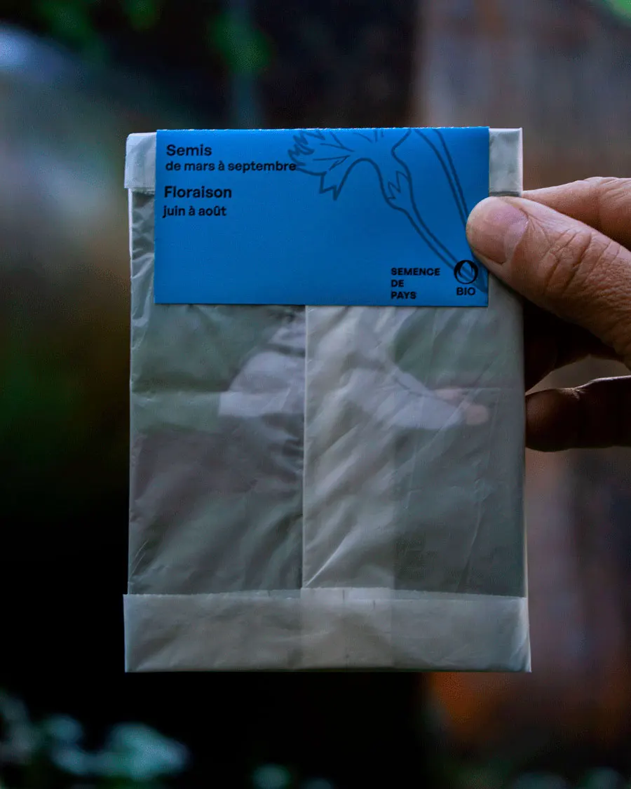
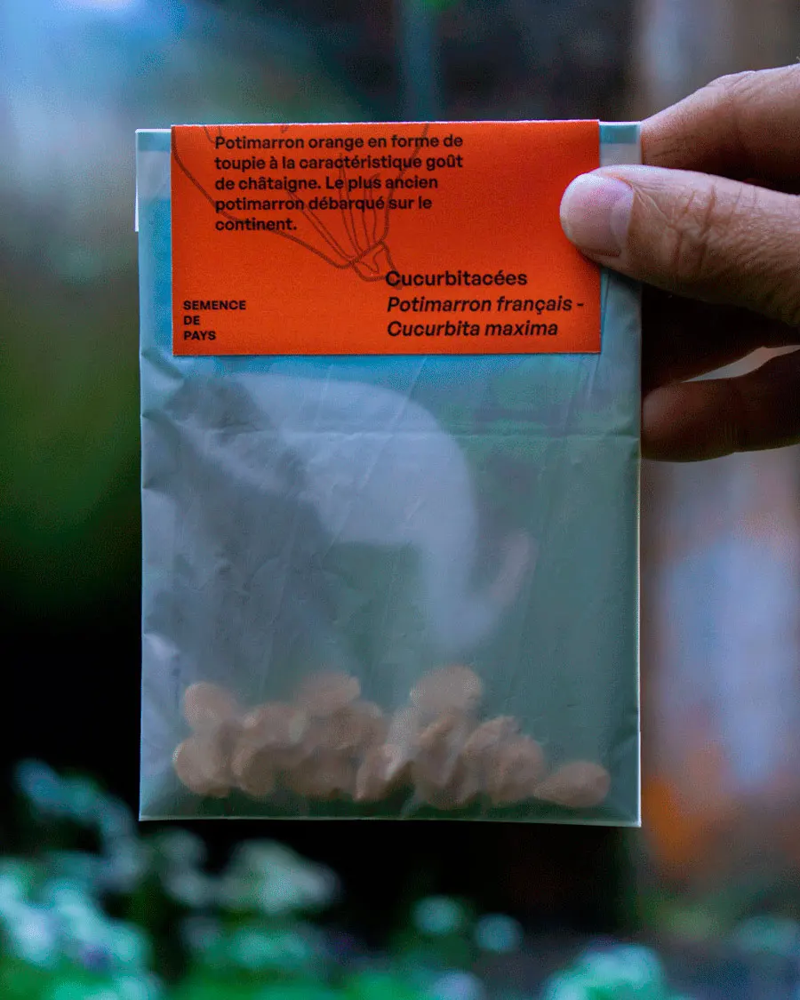
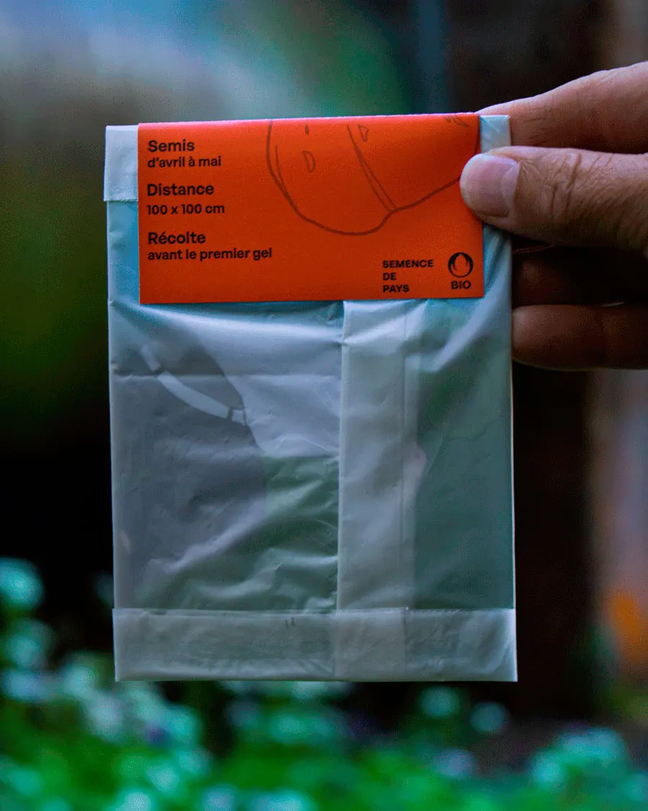
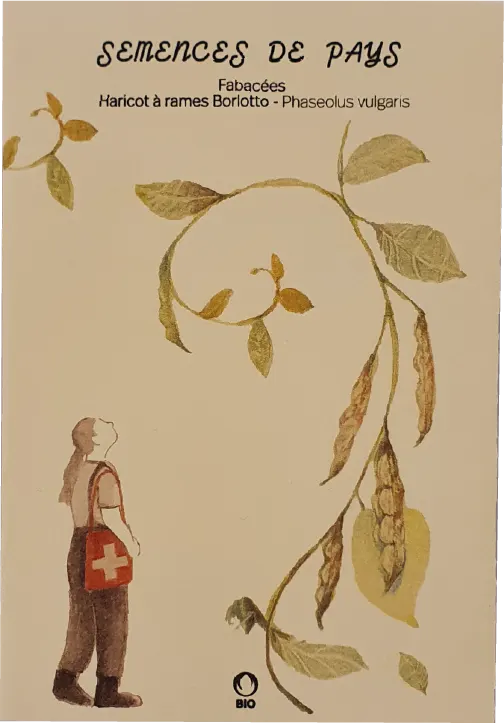
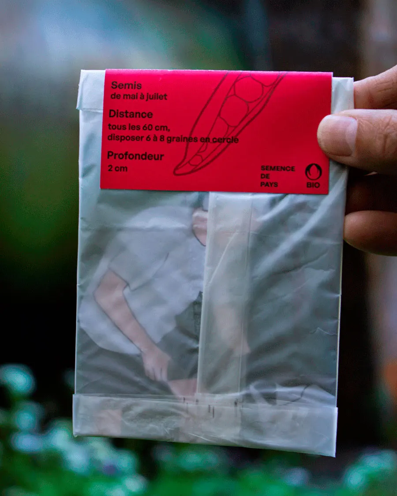

NOS SEMENCES
     Découvrez nos trésors de biodiversité sur le shop !
POINTS DE VENTE

Semences de pays développe une production de semences reproductibles, rustiques et adaptées à une agriculture biologique proche des cycles de la nature, en collaboration avec les initiatives nourricières de proximité.
Découvrez nos trésors de biodiversité sur le shop !